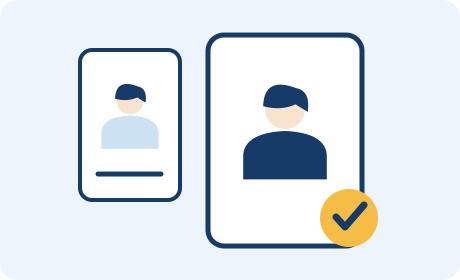
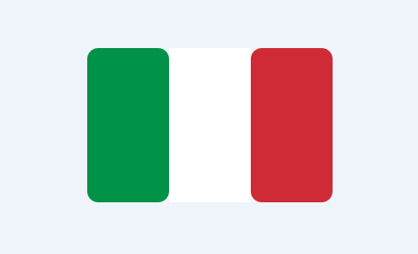

NEW
イタリア留学ラボの開設準備を始めました
大学ガイド・ランキング・留学の基本情報を公開準備中です。
ITALY STUDY LAB
現役生だから話せる、留学のリアル。
イタリアの大学で学ぶ学生と、これから留学を目指すあなたをつなぐ。
出願から現地での暮らしまで、実体験を次の一歩へ。
留学を、一部の人の特別なものにしない。
イタリア留学ラボ｜開設準備中
学生4名は掲載イメージ用の仮プロフィールです。相談の予約・申込はまだ受け付けていません。
NEW
大学ガイド・ランキング・留学の基本情報を公開準備中です。
Universitaly・イタリア政府・大学の公式情報をご案内します。
学生4名分の掲載枠を用意しています。以下は仮の表示です。
出願準備・語学学習・大学生活・住居探し。
それぞれの現役学生が経験したイタリア留学のリアルを、ZoomやLINEで相談できます。
25 USD
約3,800円
1回40分
出願や現地生活の疑問を、現役学生と直接話して整理できます。
お試し10日間
5,000円
通常30日間
15,000円
現役学生1名と、期間中LINEでじっくり相談できます。
Zoom面談の円換算額は、為替レートやカード会社によって変わります。
開設準備中のため、現在はZoom・LINEとも予約・申込を受け付けていません。

現役生を選ぶ大学・専攻・経歴と相談できるテーマを見て、自分の疑問に合う相手を選びます。 相談方法・日時を決めるZoomは日時を予約。LINEは期間・開始日を確認。料金・支払方法・変更条件に同意して申し込みます。
相談方法・日時を決めるZoomは日時を予約。LINEは期間・開始日を確認。料金・支払方法・変更条件に同意して申し込みます。各プロフィールの受付状況をご確認ください。申し込み前の条件確認と、サービス開始後の相談を分けてご案内します。
イタリアで学ぶ現役生の体験談を、掲載許可をいただいたうえで紹介します。
国・お金・進学の3つの入口から、必要な情報へ。

01 / イタリア留学の基本
初めての海外生活でもイメージできるよう、家計・買い物・住まい・保険を順に説明します。
02 / イタリア留学の基本
返済が必要か、誰が応募できるか、何の費用を支援してもらえるか。奨学金の探し方を説明します。
03 / イタリア留学の基本
日本の高校から大学に進むには？ 学べる内容、出願条件、語学と学費を、進学準備の順番で説明します。
都市を選び、大学を見つける。
大学を押すと、その大学の登録学生を表示します。
マーカーは紹介大学の位置。仮プロフィールは実在学生の登録人数に含めません。
イタリアの8大学を掲載しています。
地図：© OpenStreetMap contributors ↗。大学の所在地は公式案内を参照。
仮プロフィール4名を表示しています。
ボローニャ大学（配置例）
掲載イメージを確認するための仮プロフィールです。実在する学生の在籍・経験を示すものではありません。
対応テーマは学生の参加後に確定します。
受付開始までお待ちください。
ミラノ工科大学（配置例）
掲載イメージを確認するための仮プロフィールです。実在する学生の在籍・経験を示すものではありません。
対応テーマは学生の参加後に確定します。
受付開始までお待ちください。
パドヴァ大学（配置例）
掲載イメージを確認するための仮プロフィールです。実在する学生の在籍・経験を示すものではありません。
対応テーマは学生の参加後に確定します。
受付開始までお待ちください。
ローマ・サピエンツァ大学（配置例）
掲載イメージを確認するための仮プロフィールです。実在する学生の在籍・経験を示すものではありません。
対応テーマは学生の参加後に確定します。
受付開始までお待ちください。
出願を迷っている段階から、相談方法・料金・利用上の注意まで。
エージェントは手続き支援、公式窓口は制度の確認、SNSは幅広い体験の情報収集などに利用できます。留学ラボでは、プロフィールを見て選んだ現役生の経験を個別に聞き、大学選びや準備の判断材料を得られます。対応内容は各サービスで確認してください。
はい。大学・専攻を比較している段階や、留学自体を迷っている段階でも相談できます。語学準備、授業、生活費など、自分が確認したいテーマに対応する現役生を選んでください。
イタリア版は準備中です。現在の4名は仮の掲載枠です。実際の学生・対応内容は受付開始時にご案内します。
本人が経験した語学の準備方法、出願・選考の体験、授業や課題の負担、住居探し、生活費、到着後の手続きなどです。学生ごとのプロフィールに相談できるテーマを掲載しています。未経験の制度・専攻について答えを保証するものではありません。
出願・ビザの代行、責任を伴う申請書類の添削・確認、合格・奨学金・ビザ取得の保証は行いません。大学や公的機関の判断が必要な条件は、その公式窓口へ確認してください。
質問を整理し、選んだ現役生に個別に経験を聞く時間への料金です。情報収集には無料の公式資料やSNSも利用できます。目的に合わせて相談が必要か検討し、料金と対応範囲を確認してからお申し込みください。
Zoomは1回40分、25 USD（約3,800円目安）です。円の請求額は決済時の為替・カード会社等で変わります。予約ページで支払方法と条件をご確認ください。受付準備中の学生は、予約開始後に手続きできるようになります。
ハンガリー版と同様、Zoomは開始24時間前まで日程変更・キャンセル可能です。24時間以内のキャンセルと無断欠席は返金対象外です。予約後の確認メールにある手続きリンクを使用し、支払前に予約画面の条件も確認してください。面談は40分です。
現役生1名を選び、10日間5,000円または30日間15,000円で相談します。開始日・終了日は運営の案内で確認します。申込だけでは決済や相談開始は確定しません。LINE相談の案内をご確認ください。
LINE相談の申込前の事前質問は受け付けていません。相談は案内された開始日から、選択した期間内に行います。授業・試験・時差により返信に時間がかかり、即時返信・24時間対応は行いません。サービスや申込方法の確認は運営へのお問い合わせをご利用ください。
身分証、口座情報、申請書類の原本・コピーなどは、不要に送らないでください。書類の正式審査や専門判断は対象外です。変更・キャンセル条件は申込後の案内を確認し、同意してからお支払いください。
留学を、一部の人の特別なものにしない。
お金や環境が理由で、
「判断する前に諦める」学生を減らしたい。
経験した人の一次情報を、これから挑戦する人へ。
自分に合う道を考えるきっかけを、イタリア留学ラボから。
 ミラノ工科大学
ミラノ工科大学 ローマ・サピエンツァ大学
ローマ・サピエンツァ大学 ボローニャ大学
ボローニャ大学